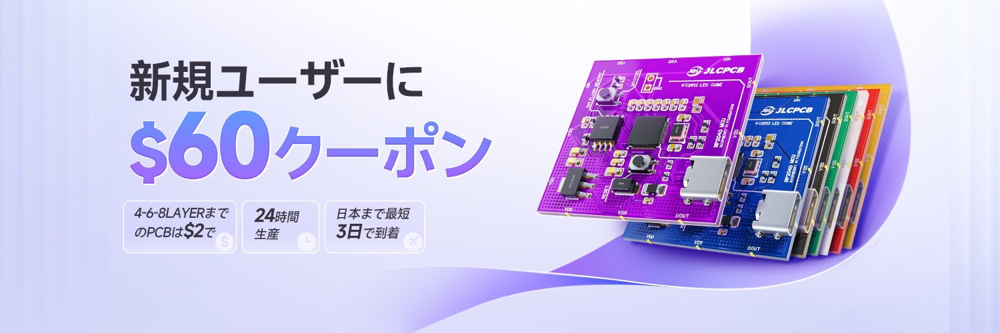
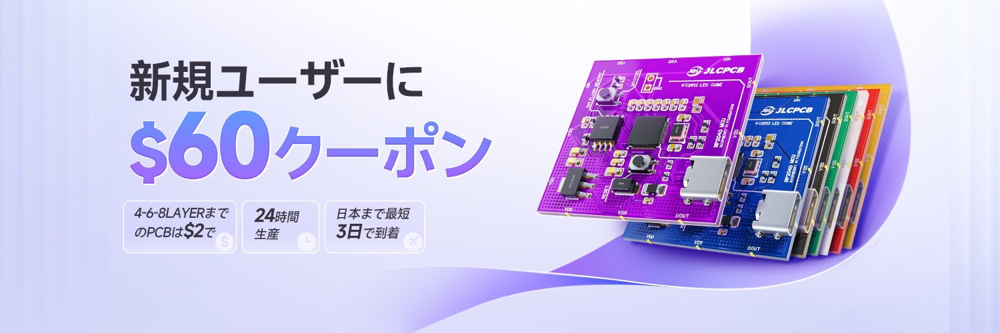

ついにロボットが動いた！
2024/8/7 🖊たびと
今回のスポンサー
前回と同様、今回のモータードライバの作成も基板の製造を行う「JLCPCB」にサポートしていただきました。JLCPCBは中国のプリント基板を製造する企業で，基板を安く注文でき，早く到着するのが特徴です．
とくに今回は，いそぎでの発注だったためとても早く製造していただき助かりました．
↓興味がある方はタップして日本語版ホームページへ↓
 

こんにちはたびとです．知っている方も多いと思いますが，僕はこんなロボットをチームで制作している大学生です．
今回は，ロボットの基板を改良し，発注した話です．前回のブログでは，最後以下のように締めくくりました．
そう，じつは結局前回はうまくモーターがうまく動かなかったため，ロボットを走らせることができませんでした．
じつはこの時起きていた問題としては，
・電圧がそもそも12Vじゃない
・マイコンがうまく動作していない
これらを解消するために，「電源基板」，「モータードライバー基板」の改良が必要となりました．
電源基板の改良
じつは前回の発注後，なぜかモータードライバに6Vしかかかっていないことに気が付きました．そこで，電源基板を調べたところ，電池が「並列」に接続されていました． つまり，6Vの並列接続で6Vしかながれていなかったのです．このままではロボットが動かせないため，早急の改良が必要となりました． 改良後の到着した基板がこちらです．表面実装のサービスを利用させていただきました．じつはJLCPCBは，部品の在庫も豊富なので，自分の利用したい部品も意外とあったりするのでとても便利です． 中の配線を変えただけですので見た目に変化はありません． ちゃんとこのように直列接続に変えました．そして12Vをしっかり得ることができました．
モータードライバーの改良
モーターが回らないという問題は不明ですが，様々な条件下でモーターを回した結果，原因がモータードライバーに回転の指令を送るマイコンにあることがわかりました． また，マイコンをブレッドボードで外部から接続するとなぜかうまく動きました．あまり回路について詳しくないため原因を特定することができなかったのですが，もしかしたら外部にブレッドボードを接続したときの抵抗がよい働きをしているのではと考えました． そこで，モーター制御用の8本の信号線に抵抗を接続してみました．届いた基盤は以下の写真です． 結局，問題解決には至りませんでしたが，１つの可能性をつぶすことができました．ところで，これ以上マイコンを格闘していてはきりがないので使用するマイコンを変えてみることにしました． それまでロボットに使用していたマイコンは自作のATmega32U4ボードだったのですが，違うマイコンを探しているととてもいいのを見つけました！それがこちらです． RP2040のマイコンボードです．そしてなぜ，これを選んだのかというとピン配置にあります．じつはこのマイコンボード以前使っていた自作マイコンボードと電源のピンの位置が一致しているのです． つまり，基板を変えることなく，そのままたださすだけで使えてしまうのです．しかも，RP2040はこのロボットを制御するメインのマイコンでもあるため扱いには慣れています．神様ありがとうTT また以前のマイコンで使用していたUARTの位置，PWMの位置ですべてこのマイコンは同じ動作をすることができます．RP2040はいろんなピンでPWMが出力できるのでほんとすごいです！
ついにロボットが動いた！
だいぶスムーズに追跡してる pic.twitter.com/Oc69NpNaQE
— たびと！🐙ー定理 (@tabito1419) July 11, 2024
いやーやっとロボットが動きました！モーターを動かすプログラムを構築するのは少し大変でした！ロボットをスムーズに動かせるよう，モーターの速度，進む方向を指定すると計算してモーターを回してくれる関数も作りました．今からロボットをどんどん強くしていきたいと思います！ また今年はPD制御に初挑戦しました．関数に入れるだけなので特別複雑なことはしていませんが，すごくきれいに動いてくれてとてもよかったです．
微分ゲイン下げたらもっと良くなったよー pic.twitter.com/0kXmpiO0VV
— たびと！🐙ー定理 (@tabito1419) August 5, 2024
最後に
ロボットの開発は大学での勉強と平行して行っているため，余裕のある時間は２週間ほどでした．こんかいもJLCPCBにサポートしていただき，すぐに納品していただきとても助かりました．みなさんも，ぜひ基板製造を行っているJLCPCBでプリント基板を注文してみてくださいね． ↓ホームページへ↓